Projects & Experiences
Artificial Intelligence | Software Engineering | Cybersecurity | Web Development
YourTaste | AI-Powered Food Discovery
Personal Project · Founder & Developer · Fall 2025
YourTaste is an AI-powered platform I independently developed to simplify plant-based living by combining restaurant discovery, personalized recipe generation, and intelligent meal planning into one application. The idea originated from the difficulty of finding restaurants that accommodate specific dietary restrictions and determining what to cook using ingredients already available at home. I wanted to build a unified solution that addressed both problems through personalized recommendations and AI-driven food discovery.
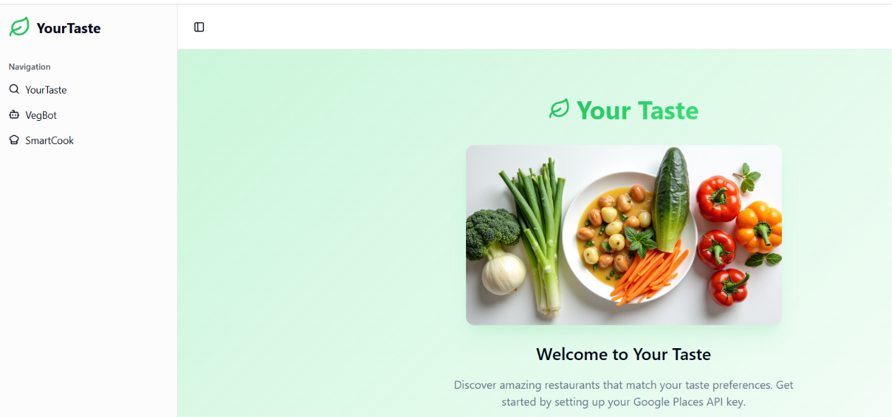
Dietary Personalization & Restaurant Discovery
YourTaste incorporates a personalized preference system that allows users to specify dietary restrictions and cooking preferences, including vegetarian, vegan, Jain, kosher, gluten-free, and other requirements. These preferences can be used throughout the application to tailor restaurant discovery and food recommendations.
I integrated the Google Maps API to support location-based restaurant discovery. Users can search using their current location or a specified address and explore dining options using dietary, cuisine, price, and distance filters.
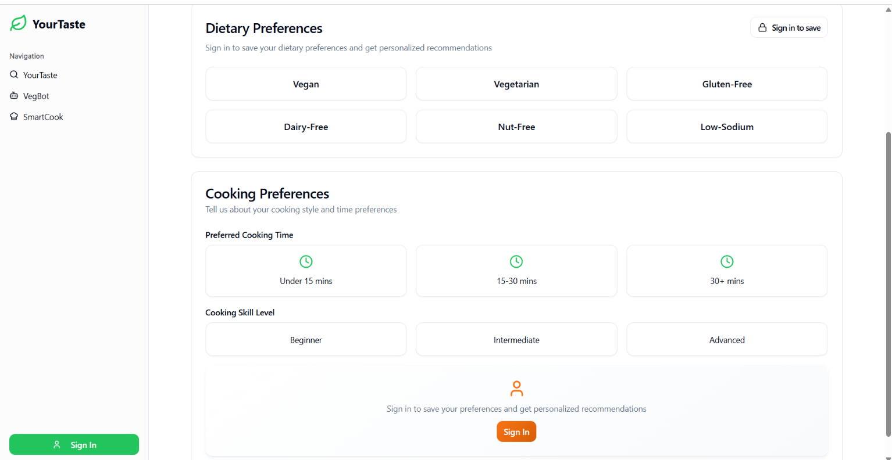
Preference configuration and dietary restriction filters
VegBot | AI-Powered Food Assistant
VegBot serves as the conversational food assistant within YourTaste. It provides an interface for users to discuss food preferences, explore meal ideas, receive dish recommendations, and discover suitable dining options. I incorporated AI-powered interactions to make food discovery more conversational rather than requiring users to navigate multiple disconnected search filters.
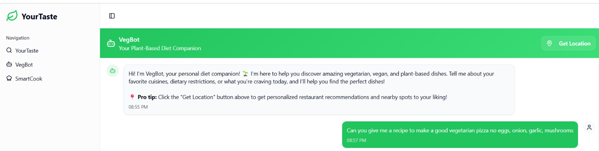
VegBot and the AI-powered recipe generation interface
Ingredient Recognition & AI Recipe Generation
The recipe generation system addresses another everyday problem: figuring out what meals can be prepared using ingredients already available. I integrated the Gemini API to process ingredient information and generate personalized recipes while accounting for user-provided dietary requirements and preferences. The ingredient scanner provides additional input methods through photo capture, image uploads, and barcode scanning, allowing users to identify available ingredients before generating recipes.
Smart Meal Planning & Shopping Lists
The SmartCook module extends the application beyond individual recipes into weekly meal organization. Users can organize breakfasts, lunches, and dinners through a weekly meal planner, save meal plans, revisit favorite recipes, and generate shopping lists based on their planned meals. This connects recipe discovery with practical meal preparation and grocery planning.
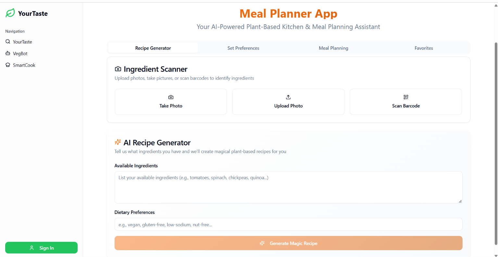
Weekly meal planning interface
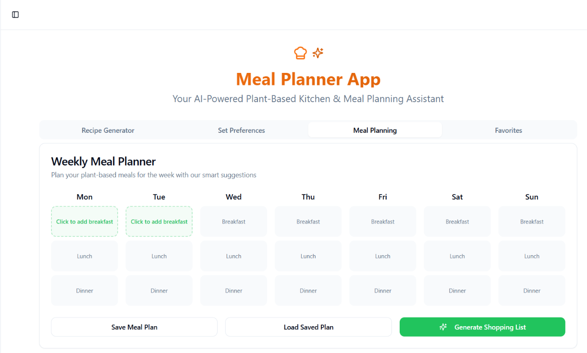
Meal organization and planning functionality
Architecture & Technical Contributions
I used Lovable as the foundation for rapidly developing the application and integrating its different components. The platform connects AI services, location-based APIs, application data, and user-facing interfaces into a unified experience.
- Designed and developed the application interface and its major functional modules.
- Integrated Gemini API for AI-powered recipe generation and personalized food suggestions.
- Connected Google Maps API for location-based restaurant discovery and filtering.
- Developed dietary preference configuration and personalized recommendation functionality.
- Implemented the VegBot conversational interface and ingredient-based recipe workflow.
- Developed weekly meal-planning functionality, saved meals, and shopping-list generation.
- Worked with Supabase to support application data and backend functionality.
- Grew the platform to 50+ users and received international hackathon recognition.
Technologies & Tools
Spydr | AI Knowledge Graph & Deep Research
AI Research & Product Development Intern · Atlanta, GA · April 2025 – March 2026
Spydr is an AI-powered context and knowledge platform designed to organize, connect, and retrieve information through interconnected knowledge structures. Rather than treating information as isolated documents or search results, Spydr represents entities, concepts, organizations, technologies, and their relationships as a navigable knowledge graph. Its broader objective is to make information more interconnected, searchable, and useful across AI-powered research workflows.
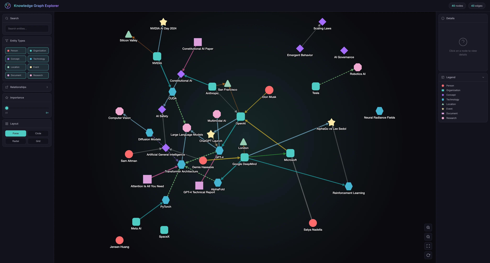
Interactive knowledge graph representing entities, concepts, and relationships as connected nodes and edges
Knowledge Graph Architecture & Visualization
The knowledge graph provides a visual representation of interconnected information. Individual nodes represent entities such as people, companies, technologies, documents, and concepts. Edges represent relationships between those entities, allowing users to explore how information connects across different topics. The graph interface supports visual exploration of complex information networks, making it easier to navigate relationships that would otherwise be difficult to identify through conventional search.
Spydr uses Neo4j as part of its graph database infrastructure, providing a foundation for representing and navigating relationships between entities.
Platform & Research Interface
Beyond the graph visualization, Spydr provides a broader platform for organizing information and interacting with AI-powered research capabilities. The interface brings together different features for exploring information, managing knowledge, and working with AI-driven tools.
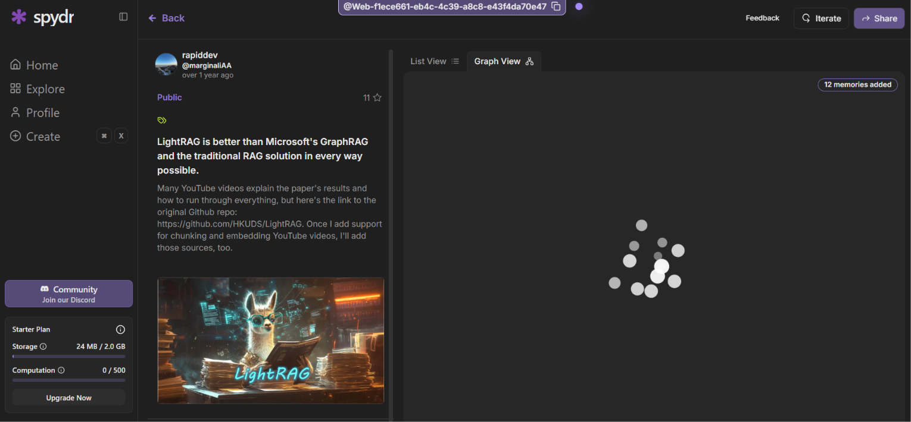
Spydr platform interface and knowledge exploration environment
Deep Research | Query Refinement & Retrieval
One of my primary contributions was working on Spydr's Deep Research system. When a user submits a research request, the system must interpret the original query, identify relevant subtopics, and retrieve useful information across different sources and domains. I worked on the prompt-refinement and sub-query generation components that help transform broad user requests into more targeted research operations.
I developed keyword-injection logic to improve retrieval relevance and worked on structured JSON output formatting to ensure that generated research results could be processed consistently by downstream application components. These improvements focused on making research queries more precise and improving the quality and consistency of retrieved information.
Backend Infrastructure & System Scalability
I also contributed to backend infrastructure supporting the platform's AI and knowledge management workflows. Using Python and FastAPI, I worked on API-related functionality and backend orchestration. I implemented rate-limiting and token-management functionality to help control usage and manage resource consumption.
My work also involved integration with Neo4j for graph database functionality and PostgreSQL for persistent application data. I tested system behavior across more than ten different domains, helping evaluate the research system's ability to handle different types of user queries and information.
My Technical Contributions
- Developed prompt-refinement logic to improve how user research requests are interpreted and processed.
- Built sub-query generation functionality to decompose broader research requests into more targeted queries.
- Implemented keyword-injection logic to improve information retrieval relevance.
- Refined JSON output formatting to support structured and consistent downstream processing.
- Implemented rate-limiting and token-management functionality for controlled API usage.
- Contributed to FastAPI backend functionality and Neo4j graph database integration.
- Worked with PostgreSQL-backed token usage tracking and tested research workflows across 10+ domains.
- Contributed to a platform serving more than 300 users.
Technologies & Tools
Cybersecurity | Networking & Security Labs
Technical Exploration · Networking · Cybersecurity
I have developed practical cybersecurity and networking experience through hands-on Linux environments, networking labs, packet analysis, and capture-the-flag challenges. These exercises have allowed me to explore how devices communicate across networks, how network traffic can be inspected, and how command-line utilities can be used to investigate and troubleshoot system and network behavior.
Linux Environments & Networking
I have worked with Kali Linux to explore networking utilities, system configuration, and command-line security tools. My lab work includes examining network interfaces, inspecting IP configurations, and working with networking commands to understand how systems communicate and how network information can be retrieved.
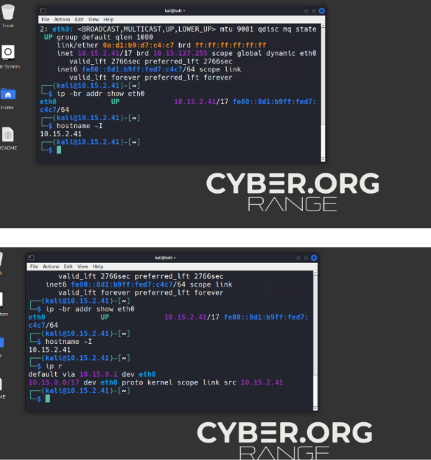
Kali Linux environment used for networking and security exercises
Wireshark | Packet Analysis & Network Traffic
I have also worked with Wireshark during cybersecurity and CTF exercises to inspect captured network traffic. Packet analysis provides insight into how communication is structured across network protocols, allowing individual packets and conversations to be examined rather than treating network activity as a black box. This work introduced me to examining packet metadata, protocol information, and communication patterns when investigating network activity.
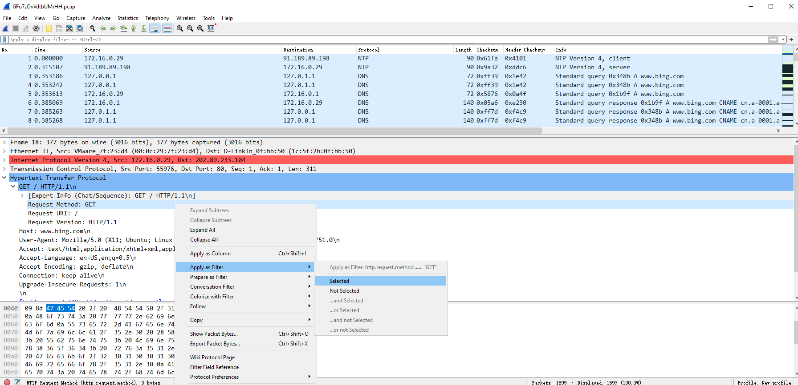
Wireshark packet inspection during a cybersecurity challenge
Technical Areas & Tools
- Linux command-line environments and system administration.
- Network interface inspection and IP configuration.
- Network scanning and reconnaissance using Nmap.
- Packet capture and protocol analysis using Wireshark.
- Hands-on cybersecurity challenges and CTF exercises.
- Network troubleshooting and investigation using command-line utilities.
iVue | Robotics, Media & Web Platform Development
Web Development Intern · Atlanta, GA · May 2025 – February 2026
iVue is a robotics and media company working across autonomous drone systems, robotics technology, and digital media. As a Web Development Intern, I contributed to the development and maintenance of web platforms supporting three brand channels: iVue Robotics, iVue Media, and iVue News. My work focused on building user-facing web experiences, organizing technical and editorial content, and supporting the company's online presence across multiple product and media properties.
Multi-Platform Development | Frontend Structure & User Experience
I worked across web properties serving different purposes within iVue's digital ecosystem. These included robotics product information, technology news, and media content. Each property needed to communicate its information clearly while providing visitors with a usable and consistent browsing experience. My contributions included building and maintaining page structures, implementing frontend styling, organizing content, and supporting the presentation of information across the company's web channels.
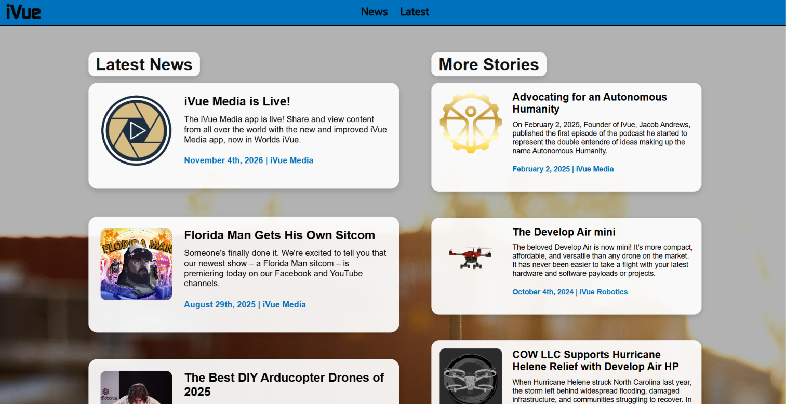
Overview of iVue's web presence across its robotics, media, and news channels
Frontend Engineering | Page Structure, Styling & Functionality
Using HTML, CSS, and JavaScript, I worked on the structure and presentation of user-facing pages. HTML provided the semantic structure for page content, CSS controlled layout and visual presentation, and JavaScript supported interactive frontend behavior. I also worked with Node.js in the web-development environment. Together, these technologies supported the development and maintenance of the company's web experiences.
Featured Web Project | The Best DIY Arducopter Drones of 2025
One specific project I worked on was the iVue article The Best DIY Arducopter Drones of 2025. This was a technology-focused web project within iVue's robotics coverage. My contribution involved the web presentation of the article within the broader iVue platform, connecting technical subject matter with a readable, user-facing page.
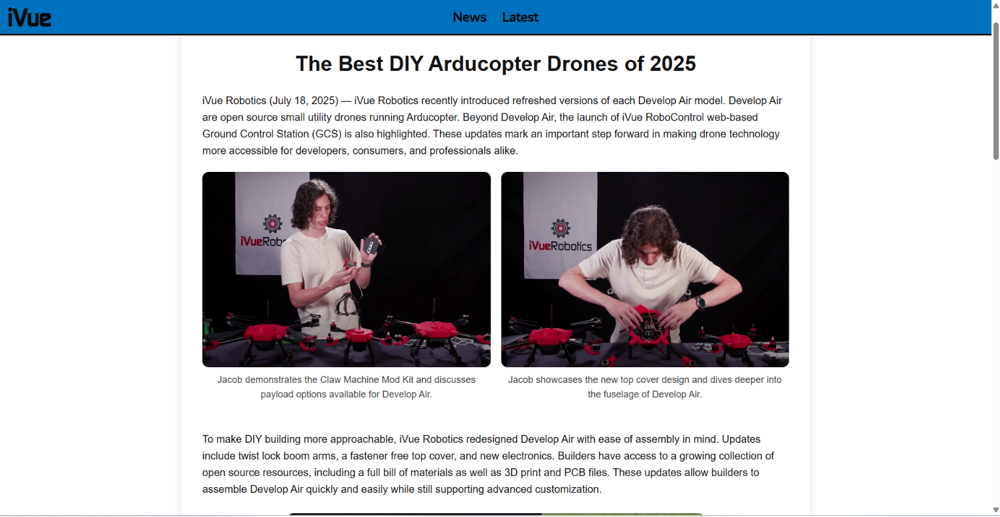
Featured iVue web project: The Best DIY Arducopter Drones of 2025
Product & Media Launch Support
I also contributed to web experiences supporting the presentation of the Air Drone series, Operator OS, and the Autonomous Humanity podcast. These pages helped communicate product and media information to visitors and supported iVue's broader digital presence.
Technical Contributions
- Built and maintained web platforms supporting iVue Robotics, iVue Media, and iVue News.
- Developed and styled frontend page structures using HTML and CSS.
- Used JavaScript to support frontend behavior and user-facing functionality.
- Worked with Node.js as part of the web-development environment.
- Organized and presented robotics, media, and technology content across multiple web properties.
- Contributed to web experiences supporting the Air Drone series, Operator OS, and Autonomous Humanity podcast.
- Supported web platforms and content experiences reaching 500+ visitors.
Technologies & Technical Areas
YGT | Technology Job Shadowing & System Design Exploration
Youth Technology & Career Exploration · Job Shadowing
Through YGT, I participated in technology-focused career exploration and job-shadowing experiences that exposed me to professional engineering environments. These experiences helped me connect software development concepts with the architecture, infrastructure, and operational considerations involved in real-world technology organizations.
Cox Communications | Technology Job Shadowing
Through a job-shadowing experience at Cox, I gained exposure to the technology environment of a large telecommunications organization. The experience helped me understand how software, infrastructure, and engineering teams support services used at scale. I learned about the role of technology teams in maintaining services, coordinating technical work, and considering reliability, security, and operational needs in an enterprise environment.
System Design & Automation | Large-Scale Platform Concepts
I also explored system-design and automation concepts using large-scale technology platforms, including Amazon as a reference for studying how distributed software systems are designed. This exploration focused on how application components communicate, how APIs connect services, and how automation can reduce repetitive operational tasks. It helped me understand the architectural considerations that extend beyond building an individual feature or application.
Technical Concepts Explored
- System architecture: Understanding how application components and services fit together into larger software systems.
- API communication: Exploring how services exchange data through defined interfaces and request-response workflows.
- Automation: Examining how automated workflows can reduce repetitive manual operations and improve consistency.
- Scalability: Considering how software systems accommodate changing workloads and growing user demand.
- Reliability: Learning why fault tolerance, monitoring, and dependable service communication matter in production environments.
- Security: Considering access control, secure communication, and responsible data handling as part of system design.
These experiences strengthened my interest in the intersection of software engineering, infrastructure, and computer engineering. They encouraged me to think about complete systems: how they are designed, integrated, automated, secured, and maintained.